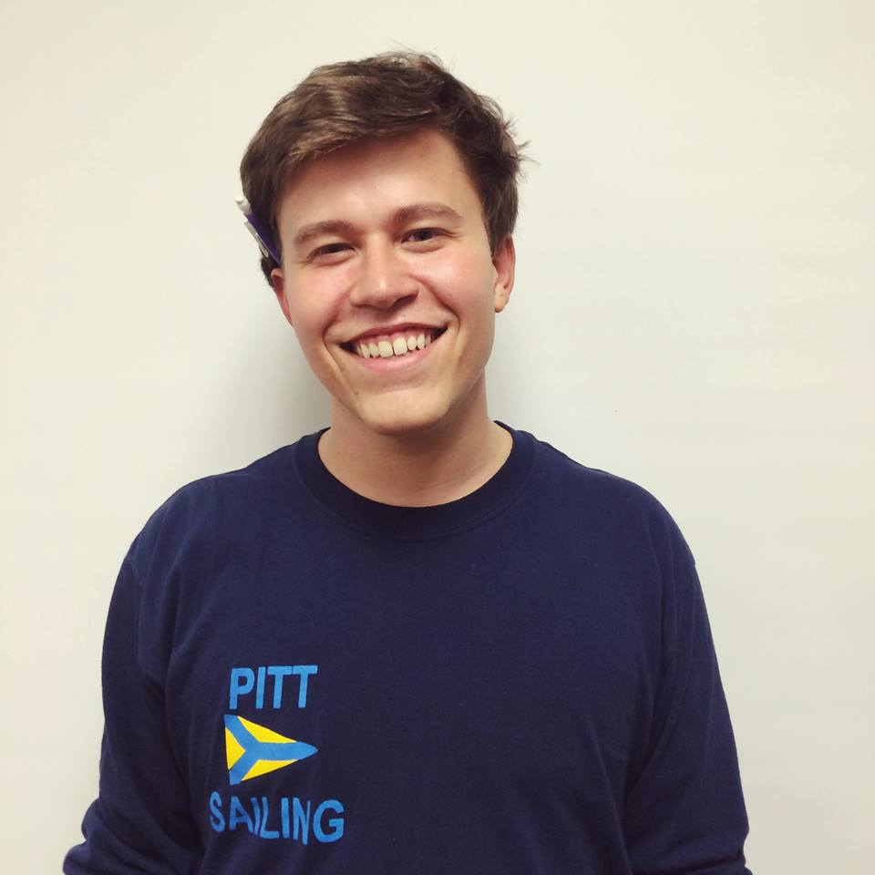
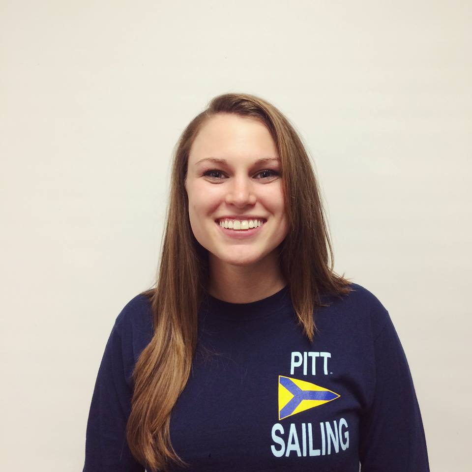
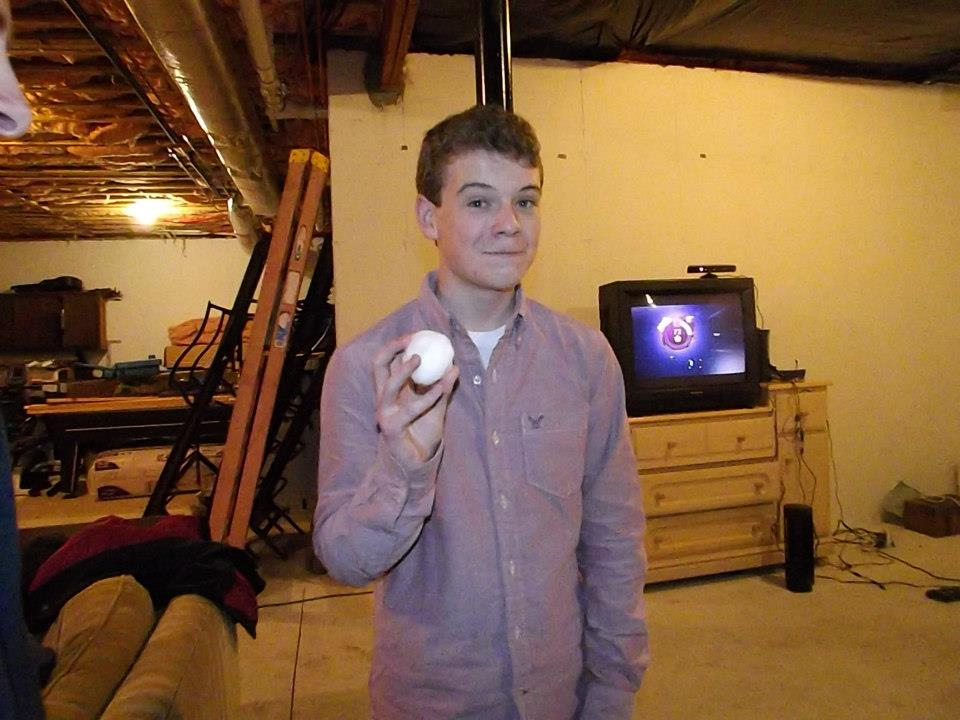
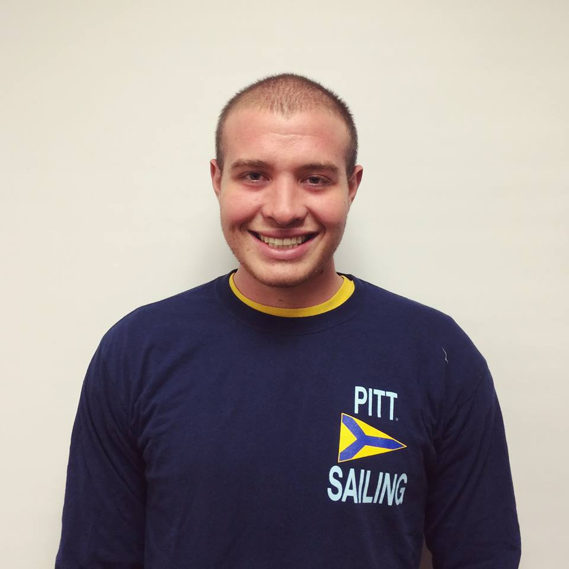

Pitt Sailing Club

Officers
Elections take place in the spring semester and those elected serve a year-long term.
These are the officers for the 2016 fall semester, 2017 spring semester.
Commodore: Cole Finton

Cole Finton is a senior majoing in chemical engineering. He is originally from Meadville, PA.
As commodore Cole is in charge of running meetings as well as general club management.
Vice Commodore: Katie Deats

Katie Deats is a senior majoring in marketing. She is originally from York, PA.
As vice commodore Katie is responsible for organizing our weekend sailing trips as well as our regattas/ trips to other schools.
Social Chair: Anastasia Bodea
Anastasia Bodea is a sophomore majoring in political science with a minor in pyschology. She is originally from Pittsburgh, PA.
As social chair Anastasia helps organize all of our events and socials (formal, day trips, etc.) as well as manage our club apparel.
Quarter Master: Geoffrey Wells
Geoffrey Wells is a sophomore majoring in engineering. He is originally from Erie, PA.
As quarter master Geoff is responsible for boat maintenance including upkeep and winter storage.
Club Sports Chair: Kieran Maroney

Kieran Maroney is a sophomore majoring in biology. He is originally from Rocky Point, NY.
As club sports chair Kieran maintains our relationship with the Club Sports Council.
Treasurer: Jack Boyle

Jack Boyle is a senior majoring in accounting/finance. He is originally from Lander, WY.
As treasurer Jack is responsible for managing the club's funds entailing the organiztion of fundraisers.